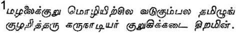
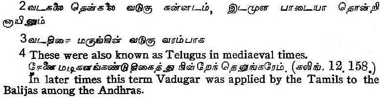
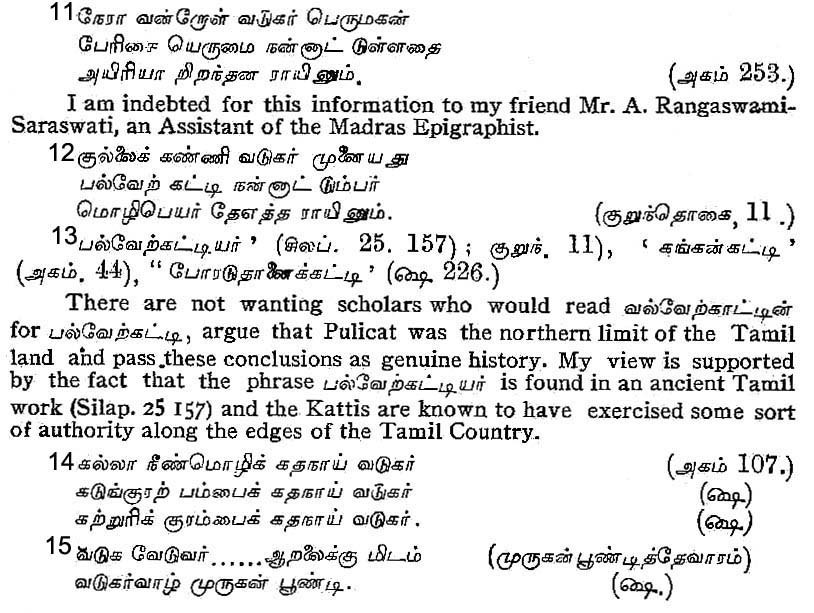
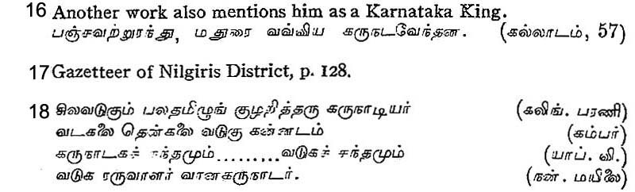
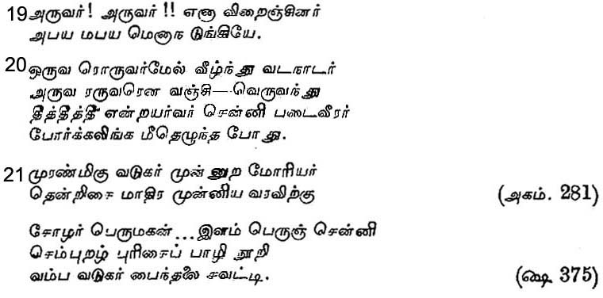
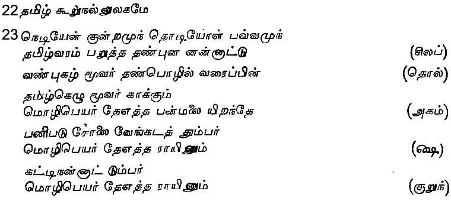
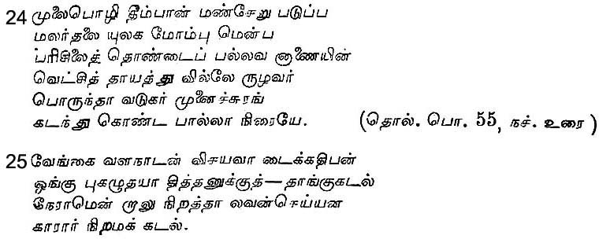
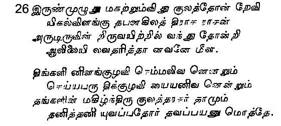

The Tamils and the Andhras
By PANDIT M. RAGHAVA AIYANGAR
I
OF the countries which make up the southern portion of India it is well-known that those in which Tamil, Telugu and Kanarese are spoken are the countries which may boast of an ancient culture and a memorable past. The cultural and historical inter-relations between these countries are naturally of great interest. Though the Kanarese language and literature are old and rich, still the intimacy of the contact of the Tamils with the Andhras, the fruitfulness of the contact and the importance of the enquiry may well justify our going first into the relations between them.
Philologists are agreed that in the Dravidian group of languages Tamil, Telugu and Kanarese fall into a class by themselves. Of them the first two are the languages entitled to be considered the more ancient. Though Kanarese has no mean literature, still the belief of the ancient Tamil scholars was that the Kanarese language is a product of the intermingling of Tamil and Telugu. Jayam-kondan, the prince of poets of the early years of the twelfth century A. D., speaks of Kanarese being a jumble of 'some Telugu and much Tamil'.1 The truth of this observation will not be lost on those who have studied old Kanarese. Malayalam is, indeed, another language pertaining to this group, but it is fittingly treated as a daughter of Tamil. That the mountainous regions skirting the western sea were formerly a part of the Tamil country and that the language spoken there was not different is obvious enough from the old Malayalam literature and the inscriptions found in that area. This is why Kamban, as great a scholar as be was a poet, speaks of Malayalam as if it was not in his days a language very different from Tamil.2
If Tamil, Telugu and Kanarese belong to one class, which language is the parent? One may confess to an inability to offer a solution acceptable to scholars in general. There are some amongst us who hold that Tamil occupies that relationship. It is accepted on all hands that Tolkappiyar's Tolkappiyam is the earliest and most authoritative. This work divides the country where Tamil is current into twelve divisions and classifies the words that come from lands like Vadugu beyond those twelve divisions as words of foreign origin. Panam-paranar too, a contemporary of Tolkappiyar, describes the Tamil land as limited on the north by the Venkata Hills and does not claim that its domain extended further beyond. Kakkai-padiniyar, also an ancient Tamil poet, mentions distinctly that Vadugu, the land where the Telugu language is current, formed the northern limit of Tamil.3 It will thus be patent that long before Tolkappiyar's times Tamil and Telugu had been current side by side as two independent languages. To judge by the Tamil literature now available, Telugu would seem to be entitled to an antiquity equal to that of Tamil.
During the Sangam period the Tamils knew the Andhras under the name Vadugar4 and their language as Vadugu. Similarly, the Telugus called the Tamils by the name Aravar and their language Aravam. The word Vadagar is only a variant of Vadugar, a northerner. Just as the country to the west (Kudakku) became Kudaku so the country to the north (Vadakku) became Vadagu and, later, changed to Vadugu.5 This derivation is also indicated by the lines of Kakkai-padiniyar already quoted and by the phrase 'Vadugar of the North' in another work of the Sangam age. It seems that even in the times of the Last Sangam the country north of the Venkata Hills was considered the country of the Vadugar. 6
Some of the Kanarese too seem to have been called Vadugar.7 In consequence of the Andhras and the Kanarese having been called by the common name of Vadugar in the days of the Sangam, it has been surmised that they were then one race and that their language too must have been known as Vadugu and that it is only later that Kanarese must have branched off into a separate language.8 But llam-Ko-Adigal, the great epic-poet of the Sangam age, mentions distinctly those who speak the Kanarese language as Karunadar,9 and other classical writers make mention separately of the lands where Kanarese and Telugu were respectively spoken.10 The northern portion of the Mysore state and parts of the districts of Bellary and Anantapur seem to be known even now as Badaga-nadu and the Kanarese of those areas are known as Badaga-varu and Badaga-natti-varu. A poem of the Sangam mentions an Erumai as a 'Vadugar chief' in whose land flowed the river Ayiri.11 This is evidently the Agiri which falls into the Tungabhadra. It is this country which was probably the extreme southern limit of the Asokan empire as is evidenced from inscriptions found in the vicinity.
If these be so, it follows that the Telugus who were to the north, and the Badaga Kannadas who were to the west, of the Tamils were known generically as the Vadugar. The poet, Ma-mulanar, says that it is beyond the lands of a chief of the name of Katti that the language changed into that of the Vadugar.12 Perhaps the chiefs well-known as Katti-Mudaliyars in the days of the Vijayanagar empire and later belonged to the lineage of this Katti.13 It is worthy of note that these Katti-Mudaliyars occupied those portions of the Tamil country which Ma-mulanar assigned to Katti. There are reasons to hold that the land called Vadugar-munai and placed beyond the lands of this Katti is identical with the Badaga-nadu we have already mentioned.14 It is these Badagas that seem to be referred to by St. Sundara in one of his psalms on a shrine in the Kongu country.15
In Vembatturar's Tiru-viliaiyadal Puranam the Jain king who captured Madura is called in one place 'the Karnataka king' and at another place as 'the Vadugu king'.16 These references show that the term Vadugar was also used to devote the Kanarese, some of whom seem latterly to have settled in the Tamil country.17
The famous commentator Nachchinarku-Iniyar and the author of the old commentatory on the Nannul state that of the lands surrounding the Tamil country those in which Kanarese, Vadugu and Telugu were current were distinct entities.18 The Telugu country being treated as distinct from the Vadugu country, we have justification for holding , that they had the Badaga country in mind in drawing the distinction. Otherwise we should have to suppose that they treated the northern part of Andhra as the Telugu land and the southern part as the Vadugu land, and seek support for this view in the fact that the Tamil country itself was divided into the Sen-Tamil and the Kodum-Tamil lands. However this may be, the later Tamils ignored what distinction there might have been and applied the terms Vadugar and Vadugu to the Andhras and theAndhra language.
No evidence is forthcoming to show that the Andhras styled themselves Vadugar. So too, the Tamils never called themselves Aravar, though a lexicographer who lived so late as three centuries back chronicled that word indicated the Tamils. To the ancient Andhras the Tamils were known not as Aravar but as Aruvar. When "]ayam-Kondan describes the terror which the Tamilian army of Kulottunga-Chola struck into the hosts of the Kalinga king, he says that they applied the name Aruvar to the Tamils.19 That it is only the term Aruvar which was current in early times is clear also from an old stanza on the same war quoted in the Dandi-Alangaram.20 These instances establish that the Andhras called the Tamils in early days by the name of Aruvar. Those regions of the Tamil land which adjoin the Telugu country are Aruva and Aruva-vada-talai and the people of these regions were known as Aruvalar. We may therefore take it that the Vadugar applied the name Aruva first to the people of these regions and then applied it generally to all Tamils.
II
Let us now look at the relationships between the Tamils and the Vadugar. In the first period, the earliest, the Tamils and the Andhras lived in amity; in the second the Tamils attained supremacy over the Andhras and in the third the position was reversed. The first period is the age of the Sangam: the early Tamil works known as the Sangam poems do not show that, even though there might have been small differences on the frontiers of the Tamil country, there was any marked antagonism or that any serious conflicts arose in consequence. In two of these poems we have mention of the Vadugar helping Nannan and the Mauryas but they seem to be Kanarese of the Badaga country and not Andhras.21 The three great kings of the Tamil country, the Cholas, the Pandyas and the Cheras, do not seem to have been guilty of the ambition to bring under their control lands beyond the Tamil country. It would even seem that they were so attached to 'the good land where Tamil was spoken' that they had no love for mixing it up with lands where strange tongues were current:22 the evidences in support of this view are many and convincing. When kings of the north made incursions into the south the three great kings of the Tamil country drew together and repulsed all their attempts at gaining even a foot-hold.23 The Tamil country was therefore soil which even the Napoleons of the north had to let alone. The strength of the Tamils in even the days when practically the whole of India had come under the suzerainty of Asoka is obvious from the circumstances that his over-lordship stopped short of Mysore and that he sent ambassadors to the three great Tamil kings. Nor did the famous empire of the Guptas cast its shadow over the Tamil land. In those early days, the Tamil were neither ambitious of ruling over others nor supine enough to be ruled over. Evidences of the Vadugar attempting to lay their hands upon the Tamil country being wanting absolutely, they must have lived in peace and concord with the Tamils. But after the days of the Sangam the relations changed. The change was due not to their own differences but to the invasions of kings from north. When the northern kings of the Pallava and Chalukya dynasties conquered Andhra and Karnataka their eager eyes were cast on Dravida as well. It is thenceforward that we mostly hear of conflicts between the Tamils and the northerners in the Tamil country and beyond. Light on these masters is thrown by the poems from Pandik-Kovai quoted in the commentary on Iraiyanar's Kalavuiyal, the hymns of the Vaishnava saints and others and some copper plates. Wars were fought between the Tamils and the Vadugar when the Palla vas took root in the Tamil land. An old Tamil poem speaks of how the herds of cows taken from the Vadugar in war by the army of the Pallava who ruled over the Tondai country were capable of giving milk for the whole world.24 Like the Pallavas, the Chalukyas too established themselves in Vengi, a part of Andhra, and in course of time came to be called Andhras. The Cholas had to advance against them and wage furious wars in the Telugu country. The northern wars of Chola-kings like- Rajaraja I and Raja Rajendra I are well-known. History records how Vira-Rajendra conquered Vengi and made a gift of it to a Chalukya of the name of Vajayaditya. In the commentary on the Vira-soliyam, a Tamil grammar composed in honour of this Vira-Rajendra, occurs a stanza which chronicles this event.25
The Cholas and the Chalukyas of Vengi were not merely ranged as opponents in war: they entered into marital relations with each other and three generations of Chola princesses entered the Vengi family: as brides it is known that Vimaladitya I the Eastern Chalukya (1015-1022) married Kundavai, daughter of the great Chola king Rajaraja I; Rajaraja-Narendra (1022-1061) the son of the Chalukya Vimaladitya I married Ammanga-devi, daughter of Rajendra I, himself son of Rajaraja I, and Vikramaditya I of the Western Chalukya line married the daughter of Vira-Rajendra Chola. These alliances tended bring peace to these dynasties, and in the process of the Eastern Chalukya alliances of the Cholas brought the Andhra country under the dominion of the Tamils. When the Eastern Chalukya king who was the husband of Ammanga-devi, daughter of Rajendra I died about 1062, the son of that couple, prince Rajendra, ascended the throne of the Andhra country. The direct Chola line, having become almost extinct at this time, and the Chola kingdom having no king at its helm, this Rajendra came down from the Andhra country, put forward the claim that the Chola throne was his in his right as the daughter's son of Rajendra Chola I, laid hands on the kingdom and mounted the Chola throne in 1070. Thus he became the lord of the Andhra country and the Chola empire. It is this Rajendra that is well known under the name Kulottunga I and under the epithets 'Abhaya' and 'Vijayadhara '. He deserved the title 'the Lord of both lineages', inasmuch as he was entitled to two crowns,—that of his father, the Chalukya king, who belonged to the lineage of the Moon, and that of his maternal grand-father, the Chola king, who belonged to the lineage of the Sun.26 His prowess was felt by his enemies all round and he emerged victorious in every contest. Anantavarman Choda-Ganga, king of the Kalinga country, having once failed to pay tribute in time, Kulottunga sent an army under his commander-in-chief, Karunakara- Tondaiman and brought that country under his control. This war it is that furnished the theme for Jayam-kondan's Kalingattup-parani, a war-song the like of which no other literature in the world can boast of. He ruled the Chola empire from Gangai-konda cholapuram, in the heart of the Tamil country, nominating his sons Vira Chola and Vikrama Chola as Viceroys of Vengi. On his death in 1120 A. D., his son Vikrama Chola ascended the throne. It is in his days and in those of his son Kulottunga II and his grand son Rajaraja II that great Tamil poets like Ottakkutta and Kamban and Pugalendi flourished. These kings too were rulers over both the Tamil and the Andhra countries and some of the viceroys whom they sent from the Chola country settled in Andhra and in a generation or two turned Andhras. 'Velanandu' and 'Pottappi' Cholas are examples of this process.
The Tamil scholars of those days were also well versed in the literary works of the Andhras. The Yapparungala-virutti, a renowned commentary which must be attributed to the tenth or the eleventh century A. D., cites an old prosodical work in the Andhra language said to have been written by one Vanchi. Though the reading in the printed books is 'Vanji,' some manuscripts may be taken to yield the reading 'Avaranji' (Aparanji ?). Competent Telugu scholars are not able to trace an author of this name. The existence of so early a prosodical treatise shows that the Andhra literature must have been very rich. Here we have proof positive that the absence in the present day of Telugu works earlier than those of Nannayya-Bhatta (11th century) cannot support the view that there was no Telugu literature prior to his days.
Rendered from TAMIL by
R. SESHADRI-AIYANGAR, B.A., B.L.







